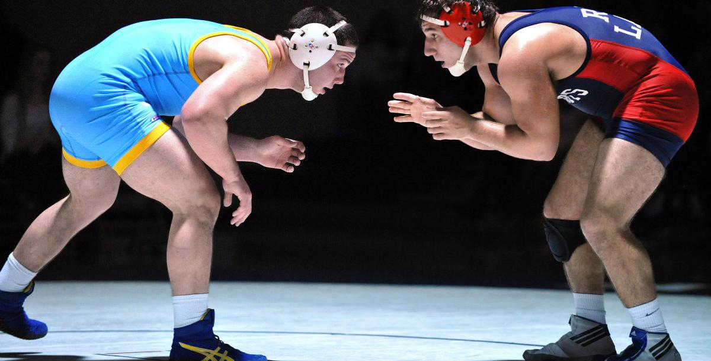
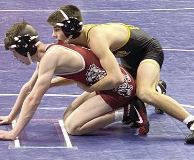

Scoring
The rule system differs in the different styles of wrestling and how you score different points. Here is how each style is scored:
Folkstyle: when you get a “Takedown” (when get behind your opponent when one of their knees is touching the mat) you score 2 points for a “Takedown”. When you are on the bottom position and you “Reverse” to where you are on top of the opponent you score 2 points for a “Reversal”. When you are on the bottom position, and you stand up and are both facing each other you score 1 point for an “Escape”. If you are on the top position and get the opponent on their back but they aren’t quite touching you score something called “Near fall”. Near fall points only come when you hold them for longer than 3 seconds, after 3 seconds of exposure of the back, you score 2 points and after 5 seconds you score 3. That is the basic scoring system for Folkstyle wrestling.

Freestyle: When you get behind the opponent and any part of their body apart from their hands or feet is toughing the ground then you score a “Take down” which is 2 points. You are awarded 2 points for “throwing” your opponent and exposing their back, this is rewarded as 2 points. You can score a 2-point throw from the top position. If you throw your opponent in an “Arcing throw” usually throwing your opponent anywhere above the hips and exposing their back is counted as 5 points. If you push your opponent to the edge of the circle and they touch any part outside of the circle you score 1 point.

Greco Roman: There are not many ways to score in Greco Roman. The same as in Freestyle if you “Throw” your opponent you score 2 points. If you get on top of your opponent, you are also rewarded 2 as a “Take Down”. If you throw your opponent where their legs are extended over their head, and you land on top of them then you are awarded 5 points. And if you reverse from the bottom position to be on top then you are awarded 1 point. And lastly If you push your opponent out of the circle you score 1 point.